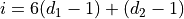
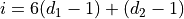
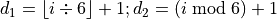

Dice Class¶
Unlike Roulette, where a single Bin instance could be identified by
the number in the bin, each Throw object is a pair of numbers.
The idea is to have the Dice class parallel to the Roulette Wheel class.
A Dice instance is a collection of Throw instances. The Dice instance
is responsible to picking a Throw object at random. We’ll look at this in detail in
Dice Analysis.
We’ll reconsider some features of Throw class in Throw Rework.
Once we’ve settled on the features, we’ll look at the details in Dice Design. We’ll enumerate the deliverables in Dice Deliverables.
We’ll look at the subject of performance improvements in Dice Optimization.
Dice Analysis¶
The dice have two responsibilities: they are a container for the Throw instances
and they pick one of the Throw instances at random.
We find that we have a potential naming problem: both the Wheel
and the Dice classes are somehow instances of a common abstraction.
Looking forward, we may wind up wrestling with a deck of cards trying to
invent a common nomenclature for the classes. They create random events,
and this leads us to a possible superclass: a Randomizer class.
Rather than over-engineer this, we’ll hold off on adding this design
element until we find something else that is common among them.
Container. Since a Dice object has 36 possible Throw instances,
it is a collection. We can review our survey of the collections in Design Decision – Choosing A Collection
for some guidance here. In this case, we note that the choice of Throw instance
can be selected by a random numeric index.
For Python programmers, this makes the a tuple very appealing.
The collection of outcomes is fixed, and an immutable structure makes
the most sense.
After selection a collection type, we must then deciding how to index each
Throw object in the Dice collection. Recall that in Roulette, we had 38
numbers: 1 to 36, plus 0 and 00. By using 37 for the index of the
Bin instance that contained 00, we had a simple integer index for each Bin instance.
For Craps it seems better to use a two-part index with the values of two independent dice.
Index Choices. In this case, we have two choices for computing the index into the collection,
We can rethink our use of a simple sequential structure. If we use a
dict, we can use an object representing the pair of numbers as an index instead of a single int value.We can compute a unique index position from the two dice values.
Decision Forces. There are a number of considerations to choosing between these two representations.
If we create an object with each unique pair of integers, we can then use that object to be the index for a
dict. The type hint isDict[Tuple[int, int], Throw]which seems to describe things succinctly.We can transform the two numeric dice values to a single index value for the sequence. This is a technique called Key Address Transformation; we transform the keys into the address (or index) of the data.
We create the index,
 , from two dice,
, from two dice,  ,
,  ,
via a simple linear equation: .
,
via a simple linear equation: .We can reverse this calculation to determine the two dice values from an index. . Python offers a
divmod()function which does precisely this calculation.This doesn’t obviously scale to larger collections of dice very well. While Craps is a two-dice game, we can imagine simulating a game with larger number of dice, making this technique complex.
Because of encapsulation, the choice of algorithm is completely hidden
within the implementation of Dice class.
Solution.
Our recommendation is to encapsulate the
pair of dice in a tuple instance. We can use
this object as index into a dict collection to associate a tuple
of two integers with a Throw object.
More advanced students
can create a class hierarchy for Dice to include
both implementations as alternative subclasses.
Random Selection. The random number generator in random.Random
helps us locate a Throw instance at random.
First, we can get the list of keys from the dict
that associates a tuple of dice numbers with a Throw instance.
Second, we use Random.choice() to pick one of these tuple instances.
We use this randomly selected tuple object to return the selected
Throw object.
Throw Rework¶
We need to update Throw instance to return an appropriate key object.
There are two general strategies available for this kind of computation:
Eager. This means we calculate the key as soon as we know the two dice values. They key can be an attribute which is fetched like any other. This is computed in the
Throwclass constructor method. This will allow all parts of the application to share references to a single instance of the key.Lazy. This means we don’t calculate the key until its required. We often use the
@propertydecorator for methods which embody a lazy calculation that we want to appear as if it was an attribute. For this, We add a method toThrowto return thetuplethat is a key for thisThrow.-
Throw.key(self) → Tuple[int, int]¶
-
It’s very difficult to make an eager vs. lazy decision until the entire application has been built and we know all the places where an object is used.
Dice Design¶
-
class
Dice¶ A
Diceinstance contains the 36 individual throws of two dice, plus a random number generator. It can select aThrowobject at random, simulating a throw of dice.
Fields¶
Constructors¶
At the present time, this does not do the full initialization of all of the Throw instances.
We’re only building the features of Dice related to random selection.
We’ll extend this class in a future exercise to build all of the Throw objects.
Methods¶
-
addThrow(self, throw: Throw) → None¶ -
Adds the given
Throwto the mapping maintained by this instance ofDice. The key for thisThrowis available from theThrow.getKey()method.
-
roll(self) → Throw¶ Returns the randomly selected
Throwinstance.First, get the
listof keys from thethrows.The
random.Random.choice()method will select one of the available keys from the the list.This is used to get the corresponding
Throwfrom thethrowsMap.
-
Dice.getThrow(self, d1: int, d2: int) → Throw¶ - Parameters
d1 – The value of one die
d2 – The other die
This method takes a particular combination of dice, locates (or creates) a
NumberPair, and returns the appropriateThrow.This is not needed by the application. However, unit tests will need a method to return a specific
Throwrather than a randomly selectedThrow.
Dice Deliverables¶
There are three deliverables for this exercise. In considering the unit
test requirements, we note that we will have to follow the design of the Wheel
class for convenient testability: we will need a way to get a particular Throw instance
from the Dice collection, as well as replacing the random number
generator with one that produces a known sequence of numbers.
The
Diceclass.A class which performs a unit test of building the
Diceclass. The unit test should create several instances of theOutcomeclass, two instances of aThrowsubclass, and an instance of theDiceclass. The unit test should establish thatThrowinstances can be added to theDiceobject.A class which performs a demonstration of selecting non-random values from the
Diceclass. By setting a particular seed, theThrowinstances will be returned in a fixed order. To discover this non-random order, a demonstration should be built which includes the following.Create several instances of the
Outcomeclass.Create two instances of a
Throwsubclass using the availableOutcomeinstances.Create one instance of the
Diceclass using the twoThrowinstances.A number of calls to the
Dice.roll()method should return randomly selectedThrowinstances.
Note that the sequence of random numbers is fixed by the seed value. The default constructor for a random number generator creates a seed based on the system clock. If your unit test sets a particular seed value, you will get a fixed sequence of numbers that can be used to get a consistent result.
Dice Optimization¶
First, we note that premature optimization is a common trap.
“We should forget about small efficiencies, say about 97% of the time: premature optimization is the root of all evil. Yet we should not pass up our opportunities in that critical 3%. A good programmer will not be lulled into complacency by such reasoning, he will be wise to look carefully at the critical code; but only after that code has been identified”
—Donald Knuth
“Structured Programming with Goto Statements”. Computing Surveys 6:4 (1974), 261-301.
The eager vs. lazy calculation of the key associated with a pair of dice is something that seems like it should have one “best” way. It seems like we should be able to chose between eager and lazy calculation of key values.
This decision is actually quite difficult to make.
Eager calculation seems optimal: get it done once and reuse the answer many times. However, in some cases, the calculation is rather expensive and isn’t always needed. In this case, the key involves the creation of a new object, and this can be a costly operation.
We’ve made an effort to optimize this by thinking of the collection
of Throw instances as a fixed pool of objects, allocated once, and then never
created again. It appears that they key associated with a Throw object is only computed
once.
For this example, the Eager v. Lazy decision seems to be moot.
In other cases, it’s a significant optimization.
In all cases, we need to use a profiler to see if this particular piece of the application is slowest. We should only optimize the parts which are demonstrably slowest. Optimizing parts which aren’t slow (or aren’t even correct) is simply a waste of time.
We should articulate alternative designs. We should leave a note in the docstrings about alternative implementations. We should not, however, pursue each alternative until we know that it adds significant value to explore the alternatives carefully.